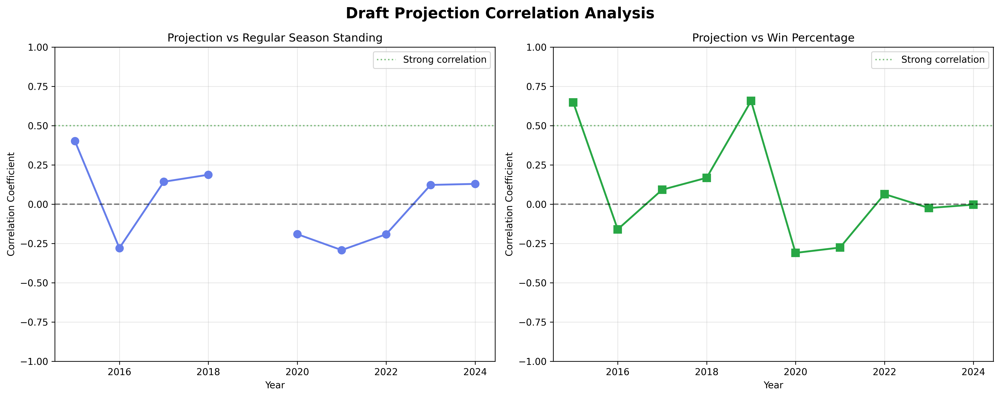

Draft Projection Correlation Analysis
How well do Ridge model projections predict regular season success?
(Projection vs Standing)
(2015-2024)
(p < 0.05)
(2015 Season)
Correlation Trends Over Time
Left chart shows projection vs regular season standing correlation. Right chart shows projection vs win percentage correlation.
Year-by-Year Detailed Results
| Year | Teams Analyzed | Projection vs Standing | Projection vs Win % | P-Value | Significant? |
|---|---|---|---|---|---|
| 2015 | 10 | +0.402 | +0.648 | 0.250 | No |
| 2016 | 10 | -0.279 | -0.160 | 0.435 | No |
| 2017 | 12 | +0.143 | +0.092 | 0.658 | No |
| 2018 | 10 | +0.188 | +0.168 | 0.604 | No |
| 2019 | 10 | N/A | +0.657 | N/A | No |
| 2020 | 10 | -0.191 | -0.310 | 0.598 | No |
| 2021 | 10 | -0.292 | -0.276 | 0.413 | No |
| 2022 | 10 | -0.191 | +0.064 | 0.597 | No |
| 2023 | 10 | +0.123 | -0.024 | 0.735 | No |
| 2024 | 10 | +0.129 | -0.003 | 0.722 | No |
Key Insights from Analysis
Minimal Predictive Power
Draft projections show very weak correlation (0.004 average) with regular season standings, indicating limited ability to predict team success.
High Year-to-Year Variability
Correlations range from -0.292 to +0.402, showing inconsistent predictive value across different seasons.
No Statistical Significance
Zero years achieved p < 0.05, meaning results could easily be due to random chance rather than genuine predictive ability.
Best Performance in 2015
2015 showed the strongest correlation (0.402) with particularly strong win percentage correlation (0.648), but still not statistically significant.
Strategic Recommendations
- Use projections for player evaluation, not team outcome prediction: Focus on identifying individual player value rather than predicting championship success.
- Emphasize value identification over raw projections: Look for players whose projections exceed their draft cost, regardless of absolute projection values.
- Prioritize season-long management: Roster moves, waiver wire activity, and weekly lineup decisions may be more important than draft performance.
- Consider multiple evaluation methods: Combine projections with other factors like team fit, injury risk, schedule strength, and player trends.
- Focus on category balance and team construction: Investigate whether balanced category coverage or punt strategies correlate better with success.
- Analyze other success factors: Research correlations with draft spending patterns, roster turnover, or specific player archetypes.
Bottom Line
While Ridge model projections are sophisticated and useful for player evaluation, fantasy basketball championship success depends on much more than draft projections alone. Use projections as one tool among many in your strategic arsenal.